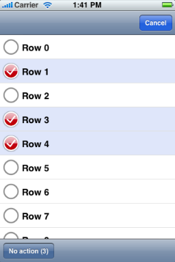

Please note: this article is part of the older "Objective-C era" on Cocoa with Love. I don't keep these articles up-to-date; please be wary of broken code or potentially out-of-date information. Read "A new era for Cocoa with Love" for more.
Multiple row selection and editing in a UITableView
By default, UITableView only supports single-row selection. In this post, I'll show you how to implement multi-row selection, similar to the message edit interface in Mail.
Introduction
The target behavior for this post is an editing mode for a UITableView which allows the selection of multiple rows and presents a button to perform an action on the selection rows.
The following is a screenshot of the sample application running:
When not editing, neither the column of circles and check marks nor the bottom toolbar is visible. When the "Edit" button is clicked (located in place of the cancel button above), the "Edit" button is replaced by the "Cancel" button and the circles and check marks column and the bottom toolbar animate in.
Requirements for the implementation
UITableView does not support multiple selection. We will use the method tableView:didSelectRowAtIndexPath: to detect touches in rows but the selected state will need to be stored separately (we cannot rely on the UITableView's selection).
We will also need a background view for displaying the selection color and a UIImageView for displaying the not-selected/selected indicator. Since the UIImageView will be hidden while not editing and the label for the row needs to move left or right when it is shown or hidden, we will also need to implement some form of layout for the UITableViewCell.
Other required behaviors include switching the "Edit"/"Cancel" buttons between modes, showing/hiding the toolbar at the bottom and tracking the number of selected rows to display in the button in the toolbar.
Implementation
The implementation begins with Apple's default "Navigation-based Application" template.
I then changed the RootViewController to be a subclass of the GenericTableViewController implementation that I presented in my previous Heterogeneous cells in a UITableViewController post. In that post, this class was presented to aid handling of different cell types in one table. I use it again here with only one cell type because in this case, the CellController provides a convenient object in which to store the "selected" state for each row and allows me to keep each file smaller and narrower in focus because it keeps "row" behavior out of the table controller.
Toolbar
The first addition I made was that of the toolbar. This is initially hidden but needs to animate onto the screen when the edit mode is entered.
The toolbar is constructed in the viewDidLoad implementation:
actionToolbar = [[UIToolbar alloc] initWithFrame:CGRectMake(0, 416, 320, 44)];
actionButton =
[[[UIBarButtonItem alloc]
initWithTitle:@"No Action"
style:UIBarButtonItemStyleBordered
target:self
action:@selector(noAction:)]
autorelease];
[actionToolbar setItems:[NSArray arrayWithObject:actionButton]];but cannot be easily added to the view hierarchy at this time. Instead, we wait until the viewDidAppear: method is invoked and add it as a child of the table's parent (the UINavigationController's content frame):
- (void)viewDidAppear:(BOOL)animated
{
[self.view.superview addSubview:actionToolbar];
}The initial location of the toolbar is below the bottom of the screen, so when editing begins, we need to move it up onto the screen. When editing ends, it is moved back again. This frame animation occurs in the showActionToolbar: method.
Edit Mode
Standard edit modes for UITableViews are started by calling setEditing:animated: on the UITableView. We are not going to use any of the standard UITableViewCellEditingStyles, so invoking this method is not strictly required but it will propagate a notification to the UITableViewCells and allow us to query the state at a later time so we will use it anyway.
The edit: and cancel: methods switch us into and out of "Edit" mode respectively.
- (void)edit:(id)sender
{
[self showActionToolbar:YES];
UIBarButtonItem *cancelButton =
[[[UIBarButtonItem alloc]
initWithTitle:@"Cancel"
style:UIBarButtonItemStyleDone
target:self
action:@selector(cancel:)]
autorelease];
[self.navigationItem setRightBarButtonItem:cancelButton animated:NO];
[self updateSelectionCount];
[self.tableView setEditing:YES animated:YES];
}
- (void)cancel:(id)sender
{
[self showActionToolbar:NO];
UIBarButtonItem *editButton =
[[[UIBarButtonItem alloc]
initWithTitle:@"Edit"
style:UIBarButtonItemStylePlain
target:self
action:@selector(edit:)]
autorelease];
[self.navigationItem setRightBarButtonItem:editButton animated:NO];
NSInteger row = 0;
for (MultiSelectCellController *cellController in
[tableGroups objectAtIndex:0])
{
[cellController clearSelectionForTableView:self.tableView
indexPath:[NSIndexPath indexPathForRow:row inSection:0]];
row++;
}
[self.tableView setEditing:NO animated:YES];
}Here you can see the "Edit"/"Cancel" buttons being swapped, the toolbar being shown/hidden and setEditing:animated: being invoked. I also implement tableView:canEditRowAtIndexPath: to always return yes, since all rows may be edited in this table.
Showing/hiding the check mark column
When setEditing:animated: is invoked on the table, the table in turn invokes the setEditing:animated: on all visible UITableViewCells, allowing each row to update for editing.
In response to this, we need to show/hide the check mark column. We handle this in a UITableViewCell subclass where the setEditing:animated: is implemented to call setNeedsLayout and the layoutSubviews method is overridden to handle different layouts for the "Edit" an "Not Editing" modes.
When editing, the cell's contentView is shifted to the right, otherwise it is layed out flush against the left side. This is all we'll need to display the extra column because the check mark column is always present in the cell. Outside of editing mode, it is layed out off the left of screen (so you can't see it). When the contentView is shifted right by 35 pixels during editing, the check mark column (which is located at the contentView's origin minus 35 pixels horizontally) becomes visible.
- (void)setEditing:(BOOL)editing animated:(BOOL)animated
{
[self setNeedsLayout];
}
- (void)layoutSubviews
{
[UIView beginAnimations:nil context:nil];
[UIView setAnimationBeginsFromCurrentState:YES];
[super layoutSubviews];
if (((UITableView *)self.superview).isEditing)
{
CGRect contentFrame = self.contentView.frame;
contentFrame.origin.x = EDITING_HORIZONTAL_OFFSET;
self.contentView.frame = contentFrame;
}
else
{
CGRect contentFrame = self.contentView.frame;
contentFrame.origin.x = 0;
self.contentView.frame = contentFrame;
}
[UIView commitAnimations];
}The setEditing:animated: implementation ensures that re-layout occurs every time edit mode is entered/exited.
Notice that no custom drawing happens here in the UITableViewCell. I've seen many people override UITableViewCell for custom drawing but I don't think it's a good idea. The UITableViewCell is really just a layout container and that should be the only way you use it. Custom drawing should go in the backgroundView, selectionView or contentView that the UITableViewCell contains.
Drawing the cell
I use a UILabel for the text rather than setting the text property of the cell because it makes it easier to get a transparent background for the text (which I'll need to see the blue selection color).
I set cell.selectionStyle = UITableViewCellSelectionStyleNone because I don't want to use the standard selection view at all (it is limited to single rows). Instead, I achieve a selection color by creating a backgroundView for the cell and setting its background color to white or pale blue as appropriate.
The selection indicator is just a UIImageView. As previously indicated, it is layed out 35 pixels left of the contentView which places it offscreen. When the contentView is shifted right during editing, it will become visible.
The only other important behavior is that the CellController must invoke updateSelectionCount on the RootViewController when selected/deselected so that the selection count can be updated when the selection changes. I implement this in a lazy fashion by recounting all selected rows — you should probably implement this in a more efficient fashion.
Conclusion
You can download the complete MultiRowSelect Xcode 3.1 project (40kB).
The final result is a few hundred lines of code. This is not a giant mountain of code by any means but still a considerable volume given how simple "multi-row selection" might seem as a description. I think this serves to show that user-interface implementations can be very time consuming when the desired functionality is not provided by the default libraries.
None of the code is particularly complex but it still involves a lot of coordination between the table, table controller and cell so I hope that this sample implementation simplifies the task for anyone else who needs to implement it in the future.
Serving an NSManagedObjectContext over an NSConnection
Demystifying NSApplication by recreating it